Spider-Man: The Animated Series (Season 04)
Posted on Oct 13, 2025 in tv
After the best episode of the series, Season 4 of Spider-Man: TAS has high expectations. Can the show keep the momentum? Let's find out.
Bob Richardson directed all episodes.
Guilty
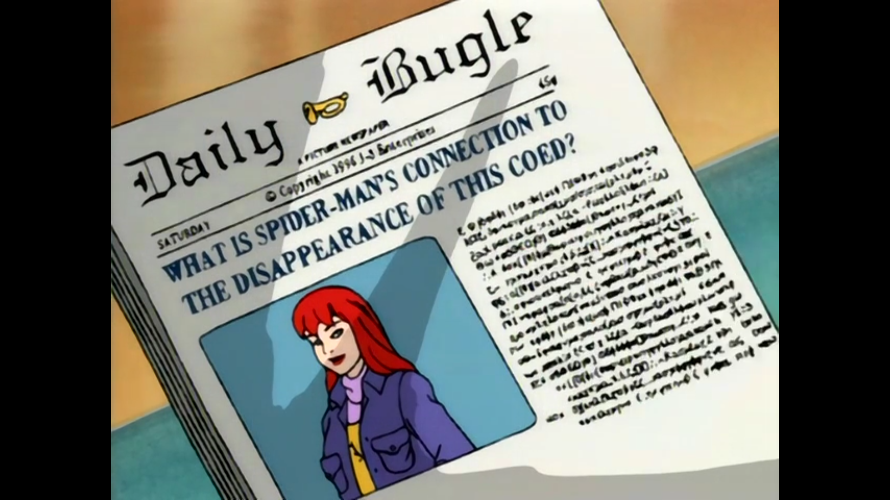"I hope you'll change your mind about taking pictures of Spider-Man, Peter. I've never been more convinced in my life that Spider-Man is a true hero. I know his job's not easy, but he's exactly what this city, this world, needs right now. I hope he never gives up." - Joseph Robertson
Story by: John Semper.
Teleplay by: Larry Brody and Meg McLaughlin.
Guilt is a strong sentiment that drives Spider-Man for most of the premiere. Flashbacks from the previous Season Finale start us this season and what follows is a conflicted Spider-Man that thinks that his antics do more harm than good. We went in this place before in the series, but this time the stakes are higher since we are talking about the disappearance of Mary Jane. To surpass this, a small redemption story is a good starting point. Kingpin sets up Robbie and Spider-Man partners with "Jigsaw" Jameson to save him. The dynamic between the journalist and the hero here is great, generating some laughs along the way. While the episode is nice, it also feels like we already have this discussion about how Spider-Man does good to the world before in the series, so I believe that not much was added to the topic here. A solid start to the season to get us started.
The Cat
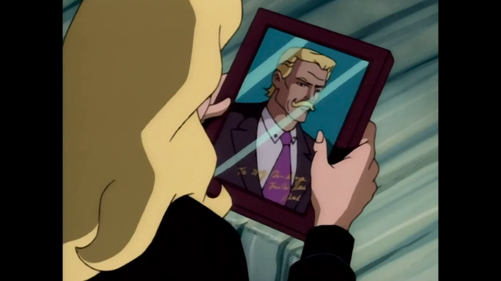"Why do I always fall for mysterious men? Jason, Michael, Spider-Man. Men who are wrapped in the dark blanket of the night." - Felicia Hardy
Story by: John Semper.
Teleplay by: Sean Catherine Derek.
Felicia Hardy was always an interesting presence throughout the series, but it is about to receive a new spotlight as the Black Cat. This episode starts this, with her family once again in trouble. The way the writing combines a Kingpin plot with Captain America's origin and the Hardy family is really well done and a clever connection between stories. I am excited to have this new approach on the character and this kickoff of the plot shows how the show can take a side character and make a interesting storyline with deep connections to well-known comic book arcs. The lowlight here was Dr. Octopus just being a hired gun for the Kingpin, even though we know that the character can be much more.
The Black Cat
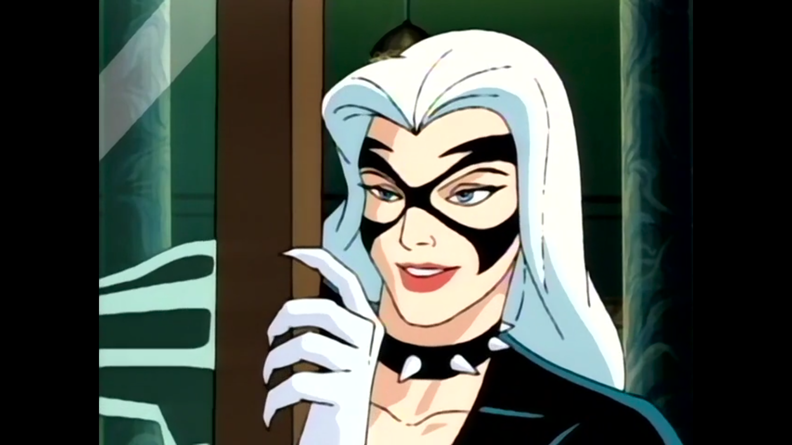"Ever hear the phrase, divide and conquer?" - Black Cat
Story by: John Semper.
Teleplay by: Marty Isenberg, Robert N. Skir, and Sean Catherine Derek.
The Black Cat is now officially with us. Kingpin develops the serum to create the Super Soldiers and applies it on Felicia Hardy. In this beginning, Spider-Man has great chemistry with her. The initial scene between them has great lines and tension that resonates through the rest of the episode. One of the best aspects of this relationship is that the Black Cat respected Spider-Man's identity and he does not know who she is, which makes the partnership more fun. Overall, Kingpin's plan to create super criminals is a little stupid and one of the instances where his idea makes little sense and is needed only to advance the plot. Even with a soft story, the moments between the main characters and the Hardy family more than make things up.
The Return of Kraven
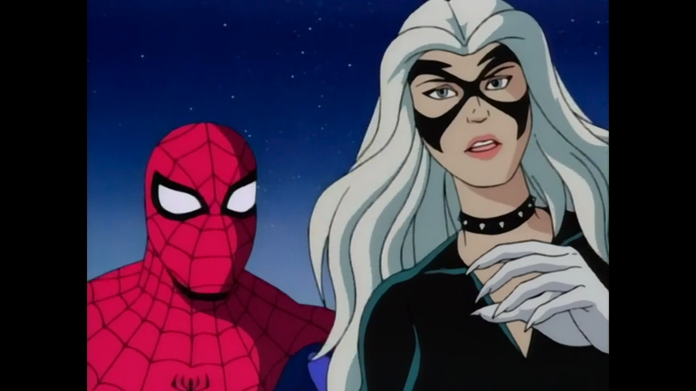"There's nothing that beast can dish out that this beauty can't handle." - Black Cat
Written by: Meg McLaughlin.
A good story needs a good villain. While the addition of the Black Cat is adding a lot to the show, Kraven returning does not do much for me. The best part of this episode is Spider-Man turning away the Black Cat for fear of hurting someone once again. Our hero turns to bitterness in multiple points of the episode while trying to understand why Kraven is back. The plot involving the Hunter is not that interesting, but the character moments from all characters here makes up for it. The ending is also an interesting part, with Peter moving in with Harry even after their issues throughout the last season. An enjoyable - even though forgettable - installment of the show.
Partners
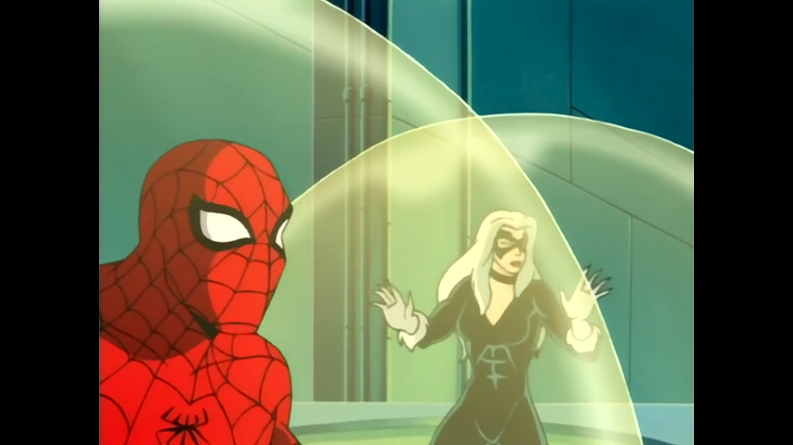"Maybe I should take superhero lessons from the Hulk instead." - Black Cat
Story by: John Semper.
Teleplay by: Cynthia Harrison and Brooks Wachtel.
The fourth season of Spider-Man: TAS relies a lot on the dynamic between Spider-Man and the Black Cat, positioning her as a main recurrent character in a way we did not see before in the series. Even so, we arrive at the fifth episode of the season without a major storyline itself besides the relationship between them. This results in episodes such as Partners, where the stakes are not that high, but the show still keeps delivering enjoyable adventures. This time, the cast of the episode involves a lot of villains, but the highlight goes to the Scorpion, one of the best characters of the show. Here, he fights to cure himself from his disease to get married. He is unable to do so, but the way the writing puts him going from hero to villain to hero multiple times in the episode itself humanizes our green friend.
The Awakening
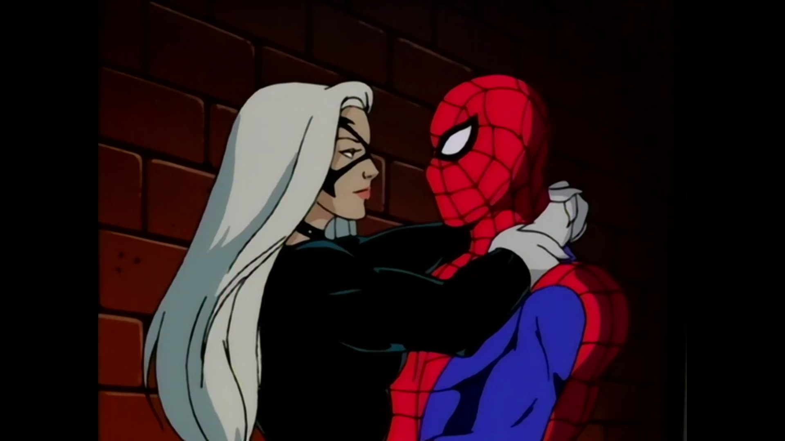"I should be catching crooks. For once, I'm actually having fun." - Spider-Man
Story by: John Semper.
Teleplay by: Sean Catherine Derek.
As expected since Felicia Hardy is a major plot point, Morbius returns in vampire form. At this point, the show feels like it is only hitting on its greatest hits from previous seasons because of a lack of creativity. Sometimes characters that have great sendoffs before can return to enjoyable success - such as Scorpion previously - but this time with Morbius is not the same. A lot of the writing is hitting on the same beat and even our interesting one-liners are not there. The only great aspect here is once again Spider-Man struggling to move on from Mary Jane and his interactions with the Black Cat. This is the point of the show's history where things seem most off and a return to form is needed.
The Vampire Queen
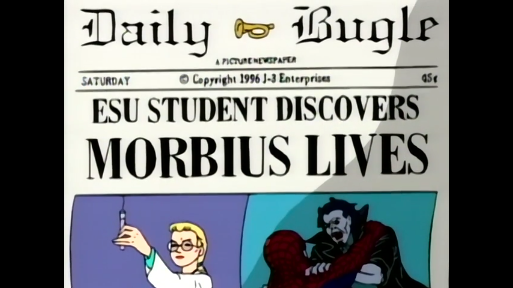"What did I do wrong? Now Black Cat's left me, Felicia's gone, and Mary Jane's still missing. Well, at least there's nowhere to go from here but up." - Spider-Man
Story by: John Semper.
Teleplay by: Meg McLaughlin and John Semper.
More people return, but no spark is seen. This is the theme of the season so far. The Vampire Queen is not a bad episode, but it is one where the only piece more interesting than anything by the numbers is the Black Cat leaving and Spider-Man reaction to it. Blade's mother is a vampire that wants to create an army of vampires is by itself not an interesting story and having many characters around it just feels like having an All-Star team not facing any real foe. And, even worse, the story barely concludes, with Blade still hunting his mother at the end, but now with the help of Morbius and the Black Cat. Let's just see who else can return to light up the season.
The Return of the Green Goblin
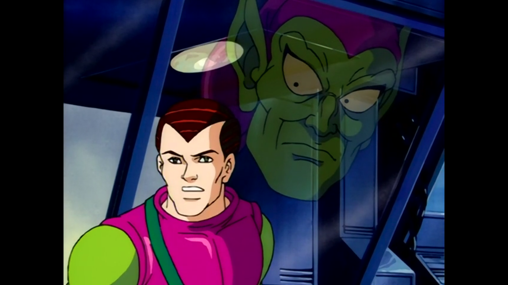"Hello, young Osborn. It's about time you got up. There's lots we have to do together." - Green Goblin
Written by: Mark Hoffmeier.
Harry Osborn snaps and the Green Goblin is once again terrorizing our hero. This was a return to form to the series, bringing back one of the main villains and the responsible part for the main arc of the show: the disappearance of Mary Jane Watson. Also, the Punisher is back to try to find MJ. All of these explosive pieces create a really good flow for the episode, which finishes with the return of Mary Jane, a great cliffhanger since there is no explanation yet to what has happened. The show does a good job of showing Harry Osborn descending into madness, even though he was never portrayed as a serious threat, the addition of the Goblin manipulating him more than makes up for this new facet of the character. Overall, this was a long overdue great episode for the series.
The Haunting of Mary Jane Watson
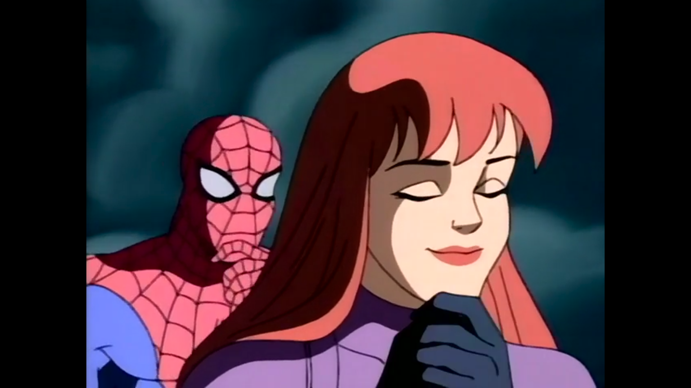"Mary Jane, all this has made me realize just how precious you are to me." - Spider-Man
Story by: John Semper and Virginia Roth.
Teleplay by: Meg McLaughlin and John Semper.
Fun fact: the ending of this episode is one of my earliest childhood memories. Spider-Man removing his mask to show his true identity is always a major plot point in every Spider-Man adaptation and this time is no different. I love the ending of this episode. Quick and sudden. The rest of the episode is good, with Mysterio returning and in love with an actress he tried to help recover from an accident. The plot is good and this is one of the rare instances of the show actually killing a character. Goodbye, Mysterio.
The Lizard King
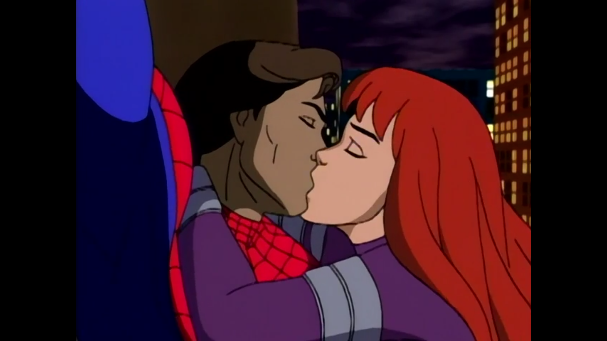"Great! This is exactly why I got out of professional wrestling." - Spider-Man
Story by: John Semper.
Teleplay by: Gordon Kent.
The lizards want to take over the world. It is interesting how the fourth season is full of episodes where the chemistry between Spider-Man and a partner - in this case, Mary Jane - is great, but it is inserted in a weak premise such as the lizards wanting Doctor Connors to be their king. It is interesting how Spider-Man is such a great protagonist that everyone that comes close to him has good chemistry, which helps a lot of the writing. This was not the best of efforts because of the premise, but it is still a show for children and it is expected to have installments such as this one.
The Prowler
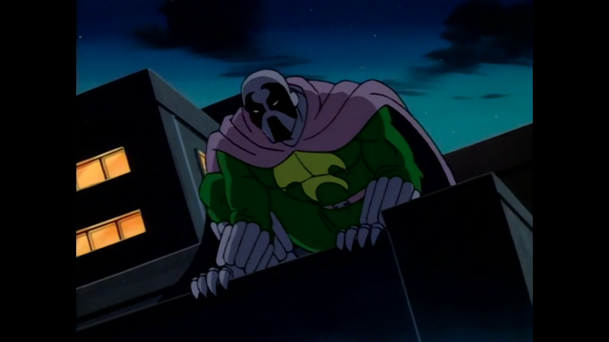"Nice claws! Do you ever hang out with my friend Wolverine?" - Spider-Man
Story by: John Semper.
Teleplay by: Terrence Taylor.
The season ends with a flashback episode that shows the origins of the Prowler. That certainly is a decision. It is difficult to understand the thought process behind a Season Finale that focus totally on a new character with Spider-Man being an afterthought, specially considering how Season 3 ended. The lack of a bigger arc really made this season feels like it just went through the motions and we have more questions than answers regarding Mary Jane's disappearance. Once again, the premise of the episode is weak. Even with a good execution, it just feels like the show could be more ambitious throughout the episode and the season. The Prowler being betrayed by the Kingpin was predictable and seemed like you could guess what would happen in each scene before it came on. In a recurrent theme for the season, the best bits comes from Mary Jane and Peter making their life decisions together and planning the wedding. It is still great how the show creates great partnerships for our protagonist.
So, that is the end of Season 4, easily the weakest of the show so far. I felt like the show did not have a creative spark this season, relying too much into character work that was effective to keep things afloat, but no major story to really stand out. The overall feeling after each episode generally went "good, not great, I will forget about it soon I'm sure". It is just disappointing because we already know how mature and great Spider-Man: TAS can be. Let's hope for a better final season.